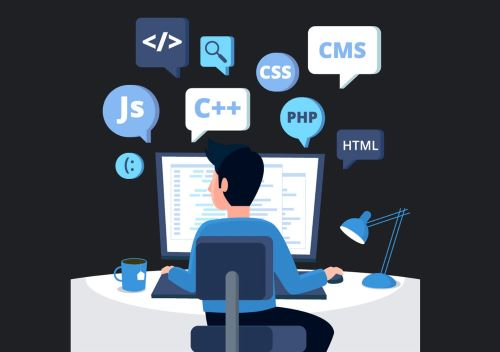

Hi, my name is Sia Gupta and I am a freshman at Dublin High School. My career goal is to become a software engineer at a big tech company. I am currently working toward getting my degree in computer science and actively looking for internships and other opportunities to get real -world experience of the tech world. Something that inspired me to look into computer science, was our tremendous usage of computers in our daily life.

I will be a valuable asset as I am passionate about my work. This passion has led me to challenge myself daily and learn new skills that helped me to do better work. As a freshman in high school, I have started working on projects to help people. I am genuinely passionate about working for humanitarian causes, and use my skills. I also work on improving my skills in coding regularly, and create other websites and games for entertainment and practice.
Currently I am taking Computer Science Principles and I have made a couple of projects in python, html/css, and other IDEs. At school, I participate in the Dublin High Speech and Debate club, and I am a part of the varsity badminton team at school. I learned from both of these things that being a team-player requires responsibility and dependability to your team. This applies toward working toward becoming a software engineer, because engineers often work together and need to be reliant on each other, and being experienced in this, I can be a good asset. Outside of school, I am playing badminton professionally and self-learning javascript. I am self-motivated and that allows me to follow my passions and get where I want to be.